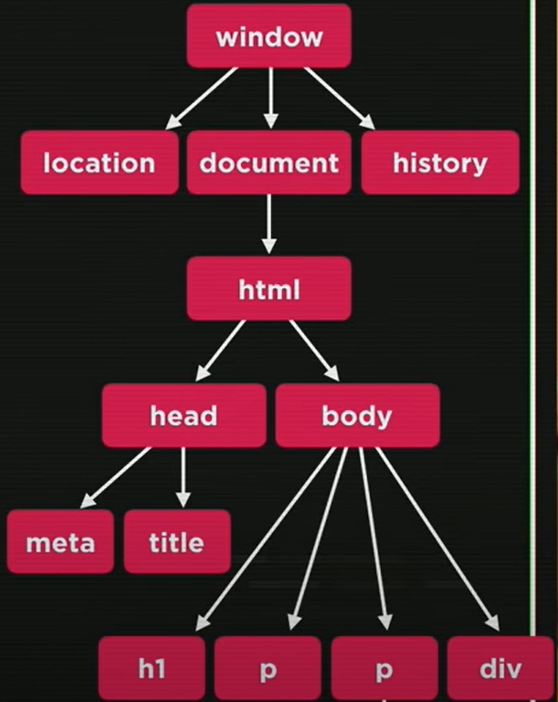

O desenvolvimento web é o processo de criação e manutenção de sites e aplicações web, envolvendo
uma combinação de design, programação e gerenciamento de conteúdo. Este campo abrange uma ampla
variedade de disciplinas e tecnologias, permitindo que desenvolvedores construam desde páginas
estáticas simples até complexas aplicações interativas.
-- VS Code --
Visual Studio Code, frequentemente abreviado como VS Code, é um editor de código-fonte gratuito e
de código aberto desenvolvido pela Microsoft. Tornou-se uma das ferramentas mais populares entre
desenvolvedores, graças à sua versatilidade, desempenho e extensibilidade. Disponível para Windows,
macOS e Linux, o VS Code é projetado para ser leve, rápido e altamente personalizável.
-- HTTP x HTTPS --
-- HTTP --
-- HTTPS --
O HTTP (Hypertext Transfer Protocol ou Protocolo de Transferência de Hipertexto) é o principal protocolo
responsável pela transferência de dados na Internet, criando as bases necessárias para a conexão entre um cliente e um servidor.
O HTTPS (Hypertext Transfer Protocol Secure ou Protocolo de Transferência de Hipertexto Seguro) é um protocolo de
comunicação da Web que protege a integridade e a confidencialidade dos dados trocados por meio de comunicação criptografada.
-- HTML x CSS x JS --
-- HTML --
HTML, ou HyperText Markup Language (Linguagem de Marcação de Hipertexto), é a linguagem padrão usada para criar páginas da web
e aplicações web. HTML é amplamente utilizado em conjunto com CSS (Cascading Style Sheets) para estilizar e JS (JavaScript) para
adicionar interatividade, formando a base de qualquer site moderno.
-- CSS --
CSS, ou Cascading Style Sheets (Folhas de Estilo em Cascata), é uma linguagem usada para descrever a apresentação de um documento escrito
em HTML. Enquanto HTML é usado para estruturar o conteúdo de uma página web, CSS é usado para definir como esse conteúdo deve ser exibido,
permitindo a separação entre a estrutura e a aparência de uma página.
-- JavaScript --
JS, ou JavaScript, é uma linguagem de programação amplamente usada para desenvolver páginas web dinâmicas e interativas.
-- DOM --
JavaScript pode acessar e manipular o DOM (Document Object Model), permitindo alterar a estrutura, estilo e conteúdo das páginas HTML
dinamicamente. Ele representa a estrutura de um documento como uma árvore de objetos, permitindo que linguagens de programação, como
JavaScript, acessem e modifiquem seu conteúdo e estrutura. O DOM é essencial para tornar páginas web dinâmicas e interativas.

-- Atividades --
Uma das atividades avaliativas era necessário ter o uso do DOM:
Nessa atividade, o objetivo é adicionar tópicos sobre algo(nesse caso sobre jogos), fazendo assim uma lista onde pode ser editada e deletada(Obs: feito com uma estilização do game "Undertale").
Se quiser ver mais atividades feitas, como a calculadora, venha ver o meu
GitHub!